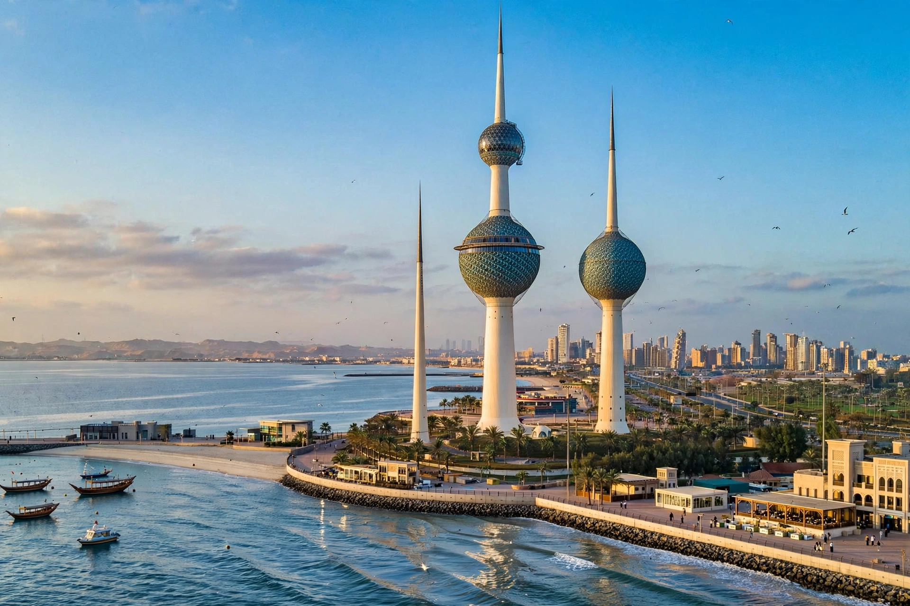

[Image placeholder: The Kuwait Towers above Kuwait Bay]| Country | Kuwait |
|---|---|
| Population | Metro about 3 million (most of Kuwait's population) |
| Landmark | Kuwait Towers (187 m) |
| Port | Shuwaikh and Shuaiba |
**Kuwait City** is the capital and largest city of Kuwait, on the southern shore of Kuwait Bay in the Persian Gulf. Founded around 1716 as a fishing village by the Utub families, it grew wealthy on pearling, fishing and trade between India and Arabia until oil exports after 1946 transformed it into a modern, air-conditioned metropolis.
Iraq's invasion in August 1990 began the Gulf War; the city was occupied and looted for seven months before liberation in February 1991 by a US-led coalition, amid the burning of Kuwait's oil wells. Landmarks include the Kuwait Towers (1979), symbols of the city, the Grand Mosque, the old dhow harbour and Souq Al-Mubarakiya, and the Liberation Tower. Most Kuwaitis work for the state; the city's population is majority expatriate.
Kuwait City has one of the hottest climates of any major city: summer temperatures regularly reach 45–50 °C. The metropolitan area spreads south along the Gulf coast in a chain of suburbs from Jahra to Ahmadi.